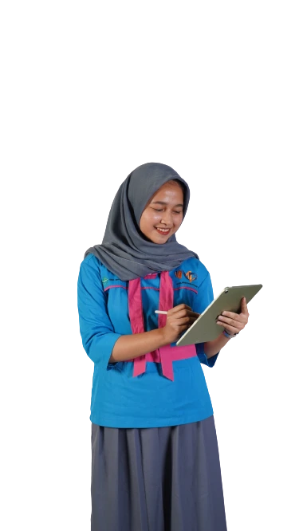
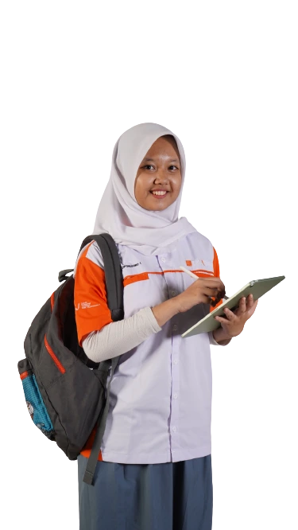

SMK Diponegoro 1
Selamat datang di Website resmi Sekolah Menengah Kejuruan Diponegoro 1 Jakarta. Di era digital saat ini, website sekolah merupakan pintu gerbang informasi terdepan sebagai sarana untuk menyebarluaskan berbagai publikasi terkait kemajuan pendidikan dan pencapaian SMK DIPONEGORO 1 Jakarta terkini.
Profile
SMK DIPONEGORO 1 JAKARTA
Selamat datang di Website resmi Sekolah Menengah Kejuruan Diponegoro 1 Jakarta. Di era digital saat ini, website sekolah merupakan pintu gerbang informasi terdepan sebagai sarana untuk menyebarluaskan berbagai publikasi terkait kemajuan pendidikan dan pencapaian SMK DIPONEGORO 1 Jakarta terkini.
Sebagai media pembelajaran, terlebih di masa pandemi masih berlangsung, website sekolah juga diarahkan dapat mendatangkan kemanfaatan sebagai sarana pembelajaran dengan memuat blog , e-learning, karya dan media pembelajaran yang dibuat oleh pendidik serta para siswa.
Fasilitas
Jurusan
Mengacu pada KBBI, pengertian multimedia adalah penyediaan informasi pada komputer yang menggunakan suara, grafika, animasi, dan teks. Multimedia merupakan gabungan lebih dari satu media yang digunakan untuk menyampaikan atau memberikan informasi. Contoh multimedia mencakup animasi, musik, video, foto, gambar, maupun teks.
Belajar multimedia itu bisa dilakukan sejak sekolah. Iya, Sobat. Multimedia merupakan salah satu Kompetensi Keahlian di SMK, pada Program Keahlian Teknik Komputer dan Informatika, Bidang Keahlian Teknologi Informasi dan Komunikasi. Nah, kalau bertanya Jurusan Multimedia ngapain aja, jawabannya akan sangat tergantung di mana dan berapa lama kita belajar multimedia.
Jurusan Multimedia adalah salah satu jurusan di SMK yang mempelajari tentang penggunaan komputer. Belajar multimedia di SMK berarti kita belajar bagaimana menyajikan data dalam bentuk suara, animasi, teks, gambar, maupun video. Materi Jurusan Multimedia di SMK mengharuskan kita menggunakan berbagai macam tools, seperti Adobe After Effect, CorelDraw, Freehand, Adobe Photoshop, atau yang lain.
Mata pelajaran SMK Multimedia antara lain Simulasi dan Komunikasi Digital, Sistem Komputer, Komputer dan Jaringan Dasar, Pemrograman Dasar, Dasar Desain Grafis, Desain Grafis Percetakan, Desain Media Interaktif, Animasi 2D dan 3D, Teknik Pengolahan Audio dan Video, dan masih banyak lagi.
Belajar multimedia di sekolah dan di universitas tentu tak sama. Sebagian mata kuliah yang dipelajari oleh mahasiswa yang kuliah Jurusan Multimedia antara lain:
Apa Itu Jurusan Otomatisasi dan Tata Kelola Perkantoran?
Otomatisasi dan Tata Kelola Perkantoran (OTKP) atau dulunya Administrasi Perkantoran (AP) merupakan salah salah satu jurusan di Sekolah Menengah Kejuruan (SMK) yang memberikan bekal tentang pengetahuan, keterampilan, dan sikap dalam menyelesaikan pekerjaan-pekerjaan perusahaan atau kantor. OTKP salah satu ilmu Manajemen yang mempunyai spesifikasi khusus dalam bidang perkantoran, artinya dalam ilmu Perkantoran dipelajari secara detail segala kebutuhan yang berkaitan dengan kegiatan perkantoran. OTKP bertanggung jawab atas merencanakan kegiatan kantor, menyediakan peralatan kantor, mengatur perubahan antar departemen, seta membantu tugas manajemen senior untuk menggaji dan memecat karyawan.
Kegiatan perkantoran diantaranya meliputi :
Melaksanakan aktifitas penyiapan ruang kerja dan peralatan kantor untuk seluruh pegawai, untuk memastikan ketersediaan ruangan kerja dan peralatan kantor bagi setiap pekerja sesuai dengan jenis pekerjaan dan jabatan. Melaksanakan aktifitas renovasi gedung kantor/kerja, untuk memastikan semua gedung kantor selalu siap operasional. Melaksanakan kegiatan surat-menyurat, dokumentasi dan pengarsipan, untuk memastikan dukungan administrasi bagi kelancaran kegiatan seluruh karyawan. Membuat rencana dan mengevaluasi kerja harian dan bulanan untuk memastikan tercapainya kualitas target kerja yang dipersyaratkan dan sebagai bahan informasi kepada atasan. Membuat perkiraan biaya tahunan yang berkaitan dengan kegiatan office administration, sebagai rekomendasi pembuatan anggaran departemen General Affair. Melaksanankan akan adanya kebutuhan dan pengadaan alat tulis kantor, peralatan kantor, peralatan kebersihan dan keamanan kantor serta layanan photocopy dan penjilidan. Mengawasi pelaksanaan kebersihan dan kenyamanan ruang kantor dan keamanan kantor.
Mengapa Memilih Jurusan Otomatisasi dan Tata Kelola Perkantoran?
Melalui pembelajaran SMK diharapkan tingkat pengangguran dapat ditekan karena berbeda dengan pendidikan SMA, pendidikan SMK didasarkan pada kurikulum yang membekali lulusannya dengan keterampilan tertentu untuk mengisi lapangan kerja atau membuka lapangan kerja sendiri. Selain itu, SMK juga dapat diarahkan untuk meningkatkan keunggulan lokal sebagai modal daya saing bangsa dengan melanjutkan pendidikan pada jenjang yang lebih tinggi. Jurusan Otomatisasi dan Tata Kelola Perkantoran mempelajari segala jenis kegiatan kantor. Mulai dari pembukuan, pengarsipan, hingga public relations. Mayoritas lulusannya bekerja di lingkungan perkantoran dengan peran diantaranya menjaga kelancaran operasional kantor sehari-hari termasuk bertindak sebagai perantara dari karyawan dan pimpinan perusahaan ataupun dengan pihak di luar kantor. Bagi para lulusan yang berminat di bidang seni bisa bekerja di berbagai galeri, gedung pameran dan teater, mengatur kelancaran operasional sehari-hari serta mengkoordinir acara-acara jika ada.
PELUANG PEKERJAAN :
pekerjaan yang dapat diisi oleh tamatan Program Keahlian Otomatisasi dan Tata Kelola Perkantoran antara lain : Dunia usaha / industri: staff administrasi (produksi, dokumen, operasional, ekspor impor), resepsionis, personalia, sekretaris, asisten sekretaris. Berbagai lembaga / organisasi pemerintah atau swasta: staff administrasi perkantoran dan perusahaan (bagian pendaftaran, bagian informasi, keuangan, dkk), sekretaris, asisten sekretaris, tata usaha (kesiswaan, surat menyurat, keuangan, dkk), resepsionis, personalia, asisten manajer, guru administrasi perkantoran, dosen administrasi perkantoran.
TKJ Adalah singkatan dari Teknik Komputer Jaringan. TKJ merupakan sebuah kejuruan yang mempelajari tentang cara merakit komputer, mengenal dan mempelajari komponen hardware apa saja yang ada di dalam komputer, merakit komputer serta fokus mempelajari jaringan dasar. Tidak hanya itu selama tiga tahun belajar di TKJ anda akan belajar sistem kerja jaringan dan pemograman web serta meng-administrasi komputer jaringan. Kejuruan TKJ hanya ada di STM/SMK, sampai saat ini jurusan TKJ merupakan jurusan yang sangat populer dan banyak diminati selain RPL dan juga jurusan Multimedia.
Jika anda memilih jurusan TKJ maka anda akan belajar Mikrotik, Cisco, Linux dan prangkat jaringan lainnya. Membangun jaringan pada macam-macam topologi, setting ip dasar hingga memecahkan masalah pada jaringan yang error. Merakit komputer hanya bagian dasar saja, setelah itu anda akan mempelajari cara instalasi Sistem Operasi Microsft Windows dan Linux.
Itulah pengertian dari jurusan TKJ, saya sendiri adalah siswa lulusan Teknik Komputer Jaringan. Banyak ilmu yang bisa didapatkan. Ilmu tersebut masih berguna hingga saya lulus.
Kerja apa Jurusan TKJ?
Peluang kerja jurusan TKJ memang sangat banyak, karna banyak perusahaan yang mencari dan ingin menampung karyawan – karyawan yang memiliki kelebihan di bidang teknologi seperti jurusan TKJ, kemampuan yang dicari yaitu seseorang yang mengerti komputer dan jaringan. Banyak siswa TKJ yang serius belajar hingga ilmunya dapat digunakan dalam dunia kerja, hingga siswi smk jurusan tkj banyak yang langsung terjun kedunia kerja tanpa melanjutkan jenjang selanjutnya yaitu kuliah. Beberapa teman saya setelah lulus langsung diminta oleh perusahaan sebagai Network Administrator.
Memang tidak dipungkiri semakin berkembangnya teknologi maka semakin banyak seorang IT yang dibutuhkan oleh perusahaan-perusahaan. Apalagi jika anda melanjutkan dibidang komputer juga dalam kuliah, maka ilmu yang anda pelajari 3 tahun di jurusan TKJ akan bertambah.
Pelajaran TKJ apa aja?
Pelajaran yang dibahas di jurusan TKJ tentunya mendalami dunia jaringan komputer, mulai dari dasar hingga membangun jaringan sendiri melalui Router. Mengatur komputer agar bisa saling terhubung ke internet dengan jaringan yang sudah dibuat, malukan konfigurasi Linux seperti membangun DHCP, Mail Server, DNS, dan masih banyak lagi. Serta mempelajari Mikrotik dan Cisco, namun disetiap sekolah siswa wajib sudah bisa merakit komputer dan menginstall sistem operasi, dan mengerti dasar-dasar jaringan komputer.
Kelebihan Jurusan TKJ
Setiap jurusan memiliki kelebihannya masing-masing, kelebihan jurusan tkj sendiri adalah anda akan mengerti anda akan mengerti dunia teknologi terutama komputer dan jaringan, dalam jurusan ini anda tidak akan gaptek. Hingga setelah lulus diharapkan anda bisa langsung bekerja sebagai Network Administrator. Pekerjaan mulai dari menyusun kabel, mengontrol sever, membangun topologi jaringan di setiap kebutuhannya.
Berita